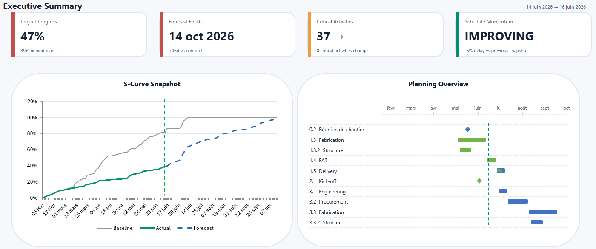
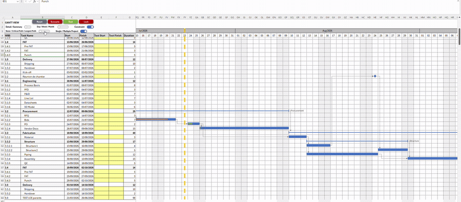
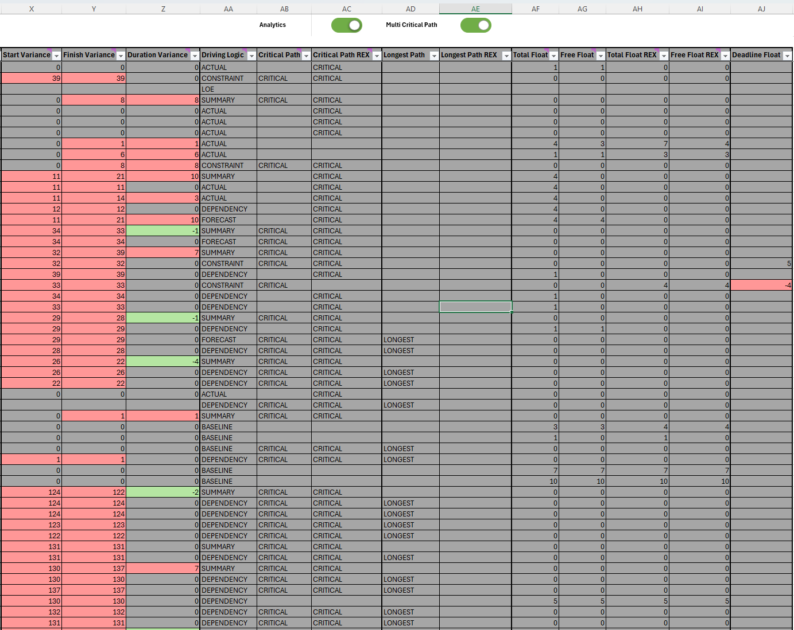
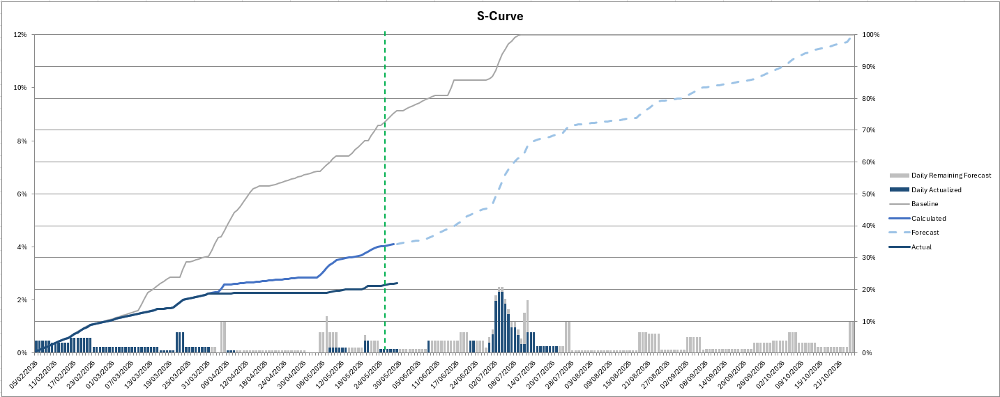

↗
Dependency-driven scheduling
FS, SS and FF relationships, positive or negative lags, multiple predecessors, calendars, milestones, constraints and automatic propagation.
A dependency-driven scheduling and project controls engine for teams that need more than a static Excel Gantt chart.

Drag a task, propagate the dependency network, recalculate the Critical Path and float, then return safely to the last calculated plan with Reset.

The Gantt, analytics, Dashboard and S-Curve consume the same calculated planning data.
FS, SS and FF relationships, positive or negative lags, multiple predecessors, calendars, milestones, constraints and automatic propagation.
Critical Path, Longest Path, Total Float, Free Float, Driving Logic, variance, deadlines and multi-project criticality.
Non-destructive TEST, complete SCENARIO alternatives, live Drag & Drop analytics, safe Reset and controlled LOCK.
Structured INFO, WARNING and STOP messages for missing predecessors, cycles, invalid constraints and inconsistent planning inputs.
Day, Week and Month scales, summaries, milestones, LOE tasks, dependencies, constraints, progress and path overlays.
Executive Dashboard, Hot Spots, Baseline/Actual/Forecast/Calculated S-Curves and time-phased workload distribution.
ProjectEngine separates user inputs, calculation, analytics, diagnostics, simulation and publication so the workbook remains understandable and testable.
Enter hierarchy, dates, durations, progress, calendars and dependencies.
Calculate dates, rollups, constraints, paths, floats and diagnostics.
Use the Gantt, analytics, Dashboard and S-Curve.
Simulate focused changes or complete scenarios before committing them.
Apply validated results or return safely to the calculated plan.


Download the prepared macro-enabled workbook from the latest GitHub release.